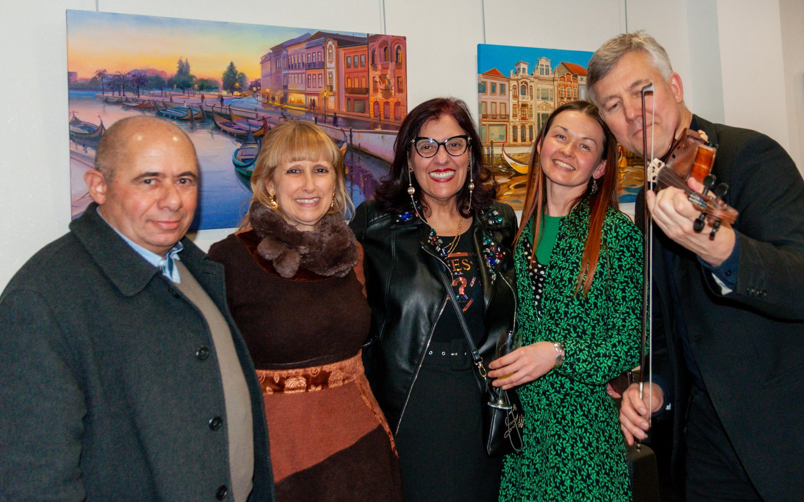

Vladimir Omeltchenko was born in 1964 in Ekaterinburg, Russia. His musical studies began at the age of five with Professor Lev Mirchin. Mirchin was a student of Lev Zeitlin, Professor at the Tchaikovsky Conservatoire in Moscow who in turn was a pupil of Leopold Auer, founder of the Russian school of Violin.
Vladimir began performing regularly from the age of nine. He played in many concerts in schools and higher educational institutions, later collaborating with various arts and cultural organisations, presenting programmes at the State University of the Urals in Ekaterinburg and other venues in the region.
Vladimir began performing regularly from the age of nine. He played in many concerts in schools and higher educational institutions, later collaborating with various arts and cultural organisations, presenting programmes at the State University of the Urals in Ekaterinburg and other venues in the region.
From 1982 till 1987 he was a member of the Ural State Philharmonic Symphony Orchestra in Ekaterinburg, working with guest conductors, participating in national and international festivals and touring the globe.
Whilst in his hometown of Ekaterinburg, Vladimir devoted much of his time to popularising contemporary composers such as A. Barykin, A. Pantykin, D. Suvorov and N. Morozov. He directed and debuted new works commissioned by the ‘Composers Association of the Urals’, which were recorded and performed for television and radio from Ekaterinburg to Moscow, St. Petersburg and throughout Russia.
At the request of Gidon Kremer in 1996, Vladimir collaborated with the internationally acclaimed composer, Giya Kancheli on the arrangement of a new composition for Violin and Chamber Orchestra. That same year, he recorded Bach’s Brandenburg Concerto No 2 in F major at a Gala concert sponsored by the Russian Ministry of Culture and directed by American conductor Sarah Caldwell. (Insert link to the CD?)
Throughout his time in Russia, Vladimir collaborated with national and international musicians including Mark Paverman, Andrei Chistiakov, Yuri Nikolaevski, Fedor Gluschenko, Gennady Rozhdestvenski and Andrei Boreiko amongst others. He performed with the Ural Symphony Orchestra in the Czech Republic, Germany, France, Belgium, Italy, Greece and South Korea.
Recording another CD in Lisbon in 1996 prompted Vladimir to move to Portugal a year later.
In 1997, Vladimir joined the Filarmonia das Beiras as principal violinist. He began playing with the Chamber Orchestra of Coimbra (now Orquestra Clássica do Centro) in 2004 and accepted the position of principal a year later. During his time there, he founded the orchestra’s string quartet and quintet and regularly performed as a soloist with the orchestra.
In 2000, Vladimir founded ‘Musica Viva –Associação Cultural Musical’, their primary objective being the organisation of concerts and music related events. Vladimir regularly conducts masterclasses around Portugal and in Russia. He records and performs with various chamber ensembles at cultural events, festivals and gala-concerts.
The First International Festival of Lev Mirchin was held in Ekaterinburg, Russia in 2017 in which Vladimir performed as soloist together with orchestra and as part of a Violin and Piano duo, playing works by Vivaldi, Bach, Mozart, Beethoven and Ravel’s Tzigane.
In July 2019, he took part in the Vendsyssel Festival, Denmark, where he performed Bach’s Concerto in E major BWV 1042, and lead the Kammerphilharmonie Europa. That same year, Vladimir formed a partnership with pianist Patrick de Hooghe and together they recorded a CD of Sonatas by Mozart, Brahms and Franck whilst touring France and Portugal.
In December 2020, the duo put on a series of three concerts in Portugal in celebration of Beethoven’s 250th anniversary, performing Spring Sonata no 5, no 7 and the Kreutzer Sonata no 9.